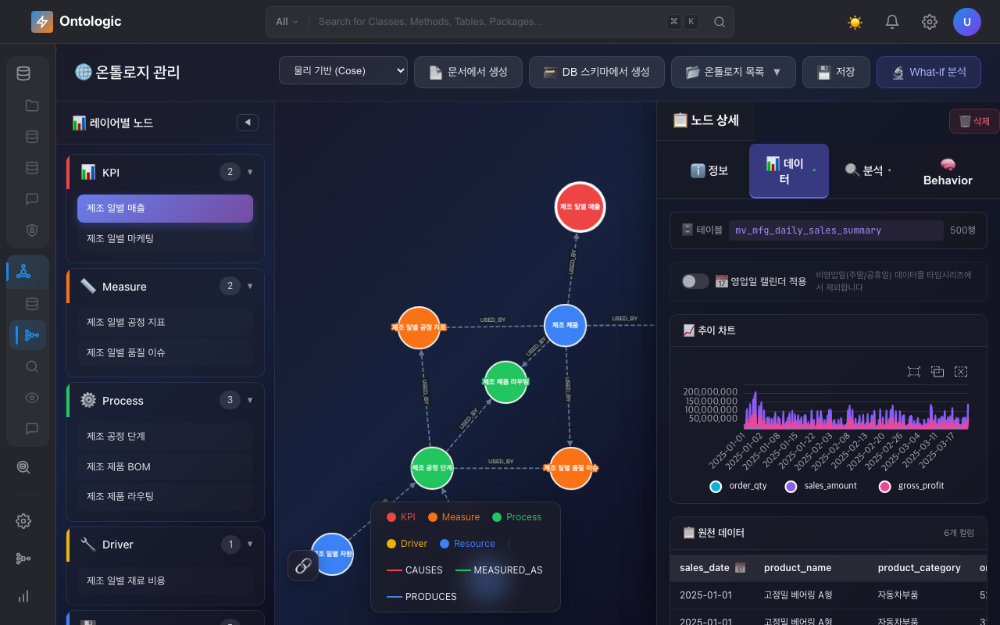
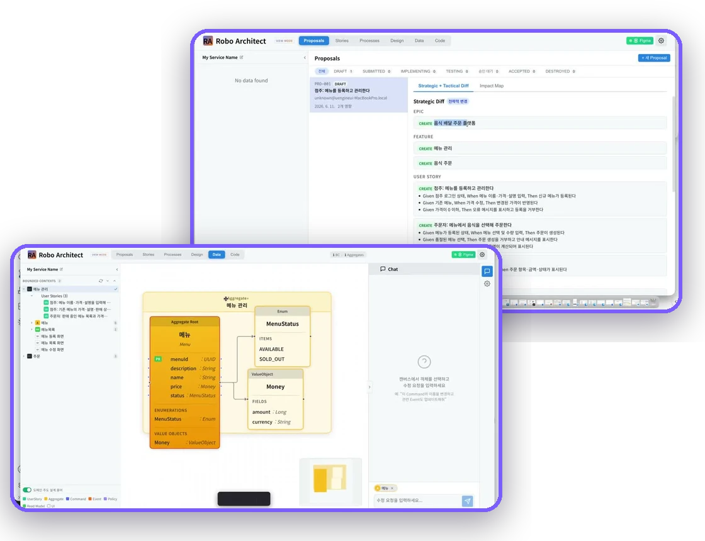

Our Products
Ontological Studio
온톨로지를 만들고, 묻고, 실행하고, 앱으로 쓰는 데스크톱 스튜디오.
설치 파일 하나에 데이터 패브릭·그래프 DB·에이전트가 모두 들어 있습니다.
macOS (Apple Silicon) · Windows 10/11 (x64) · 오픈소스 · 설치 안내
답은 한 곳에 있지 않고, 일은 답에서 끝나지 않습니다
“납땜 불량이 난 부품은 어느 완제품에 들어가고, 그 협력사 담당자는 누구인가?” — 이런 질문의 답은 품질 보고서와 구매 ERP, 물류 시스템에 흩어져 있습니다.
답을 찾은 다음에는 발주를 멈추고, 선적을 서두르고, 현황을 매일 지켜봐야 합니다.
Ontological Studio는 이 흐름을 한 앱 안에서 잇습니다. 문서와 데이터베이스를 옮기지 않고 연결해 에이전트가 온톨로지를 설계하고,
질문에는 관계를 따라 근거와 함께 답합니다. 지시는 등록된 업무 시스템의 API로 액션이 되어 사람의 승인 뒤에 실행되고,
필요하면 되돌립니다. 그리고 같은 온톨로지 위에서 업무 앱을 말로 만듭니다 — 위젯을 엮는 대시보드로도, 에이전트가 코드를 쓰는 앱으로도.
데모 ① 문서 한 장으로 온톨로지를 만들고, 발행하고, 근거와 함께 답하기까지 (2:56)
데모 ② 골든 커맨드 하나로 액션을 만들고 — 질의 · 승인 · 실행 · 취소 (2:58)
데모 ③ 온톨로지 앱 — @멘션으로 대시보드를, 에이전트로 코드 앱을 만들기 (3:12)
주요 기능
연결 → 구축 → 발행 → 질의 → 액션 → 앱, 모두 같은 온톨로지 위에서 이어집니다
동작 방식
사람은 무엇을 원하는지 말하고 결정합니다. 설계·질의·코드는 에이전트가, 실행은 승인 뒤의 실행기가 맡습니다.
1. 연결
2. 구축
3. 발행
4. 질의
5. 액션
6. 앱
설치 파일 하나에 들어 있는 것
Docker도 Neo4j도 따로 띄우지 않습니다. 앱이 켜지면 아래가 이 PC 안에서 함께 뜨고, 끄면 함께 내려갑니다.
| 구성 | 하는 일 |
|---|---|
| PostgreSQL 16 + Ontological 확장 | 그래프 저장소이자 데이터 패브릭. 원천 DB 커넥터(postgres_fdw · mysql_fdw · oracle_fdw · tds_fdw)로 가상 노드를 읽습니다. Ontological DB 자세히 보기 |
| Bolt 게이트웨이 | Neo4j 호환 Bolt 프로토콜 — Studio·포털·앱이 Cypher 로 그래프에 접근하는 유일한 길입니다. |
| Ontology Studio (백엔드 · MCP) | 구축 · 질의 · 액션 · 앱 화면과, AI 에이전트가 쓰는 MCP 도구. |
| 코딩 · 구축 에이전트 | 이 PC 의 Claude Code 또는 Codex CLI 를 cliagents 로 연결(API 키 불필요). 없으면 OpenAI 키로 동작. |
| 키네틱 액션 실행기 | 계획 · 정책 검사 · 승인 · saga 실행 · 보상. 앱이 서명한 토큰으로 업무 시스템을 부릅니다. |
| Ontological Portal | Cypher 콘솔 · 스키마 지도 · 자연어 → Cypher · 자동완성. |
| 예제 온톨로지와 업무 시스템 | 「공급망 운영」 온톨로지와 구매 ERP · 물류 WMS · 고객 CRM — 영상의 장면을 그대로 따라 할 수 있습니다. |
Download
설치하고 바로 써 보기
첫 실행 때 데이터베이스와 예제 온톨로지 「공급망 운영」, 예제 업무 시스템(구매 ERP · 물류 WMS · 고객 CRM)이 준비됩니다. 영상의 장면을 그대로 따라 할 수 있습니다.
macOS
Apple Silicon (M1 이상) · macOS 13 이상 · DMG 를 열어 Applications 로 끌어 놓습니다.
macOS 다운로드 (.dmg)서명 전 빌드라 처음 한 번은 Finder 에서 앱을 우클릭 → 「열기」 로 엽니다.
Windows
Windows 10/11 (x64) · 설치 파일을 실행합니다.
Windows 다운로드 (.exe)SmartScreen 이 막으면 「추가 정보 → 실행」. 바깥 DB 커넥터는 지금 PostgreSQL 만 들어 있습니다.
설치 파일: GitHub Releases · 소스: uengine-oss/ontological-studio
연관 솔루션
지식지도는 혼자 쓰이지 않습니다
Ontology Studio는 조직의 지식을 그래프로 명시화하는 설계 도구입니다. 그 산출물은 Ontologic Platform의 실행 서버에 실려 분석·자동화가 되고, MCP를 통해 Process GPT의 에이전트가 업무 중 참조하는 지식지도가 되며, Robo Architect의 설계·구현 에이전트에게는 도메인 이해의 근거가 됩니다.
① Ontologic Platform
설계는 Studio에서, 실행은 Ontologic 서버에서
Ontology Studio는 Ontologic Platform의 온톨로지 설계 모듈로 맞물립니다. Studio가 만든 스키마(클래스·관계·조인 키)와 데이터소스 매핑이 그대로 Ontologic 실행 서버에 연결되고, 그 위에서 자연어 질의·원인 분석·What-if 시뮬레이션·감시 자동화가 수행됩니다.
설계와 실행이 같은 온톨로지를 공유하므로 스키마를 고치면 실행 결과가 곧바로 따라오고, 무복제 바인딩이 그대로 이어져 별도 ETL 없이(Zero-ETL) 운영 데이터 위에서 분석이 돕니다.


② Process GPT
Agentic AI가 참조하는 지식지도
구축된 온톨로지는 MCP 서버로 노출되고, Process GPT의 딥 에이전트는 업무를 수행하는 도중
ontology_query로 이 지식지도를 실시간으로 탐색합니다.
규정 조항과 운영 데이터를 함께 인용하고, 온톨로지에 명시된 지식에 기반해서만 판단하므로 환각 없는 업무 자동화가 완성됩니다.
AI 에이전트가 스스로 판단해 일하는 AI-Native Enterprise에서 가장 부족한 것은 모델의 성능이 아니라 “무엇에 근거해 판단할 것인가”입니다. 온톨로지는 그 근거를 조직의 언어로 명시해 주고, Process GPT는 그 위에서 실제 업무를 실행합니다. 설계된 지식이 곧바로 실행되는 이 조합이 가장 강력한 시나리오입니다.
③ Robo Architect
설계와 구현으로 이어지는 지식지도
Ontology Studio가 구축한 도메인 지식 그래프는 Robo Architect의 설계·구현 에이전트가 참조하는 지식지도가 됩니다. 문서와 운영 데이터에서 추출한 개념과 관계가 Aggregate·도메인 이벤트 설계의 근거가 되어, AI가 도메인을 정확히 이해한 채 코드를 생성합니다.
두 제품은 서로 자유롭게 오갑니다 — Ontology Studio의 지식을 Robo Architect의 명세로 잇고, Robo Architect가 설계한 모델을 다시 그래프로 축적합니다. 지식과 명세가 한 궤도에서 순환합니다.

지금 바로 시작하세요!
Ontology Studio는 오픈소스로 제공됩니다. 문서 몇 개나 DB 접속 정보만 있으면 나만의 지식 그래프를 손쉽게 구축할 수 있습니다.
Docker 또는 로컬 실행을 지원합니다.